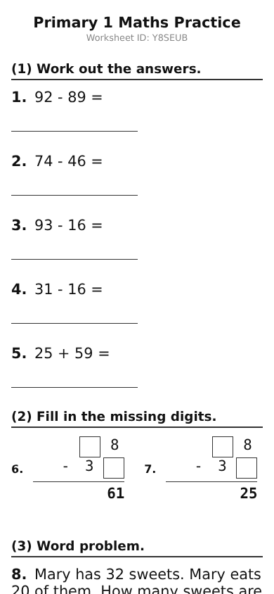

Stop hunting for practice worksheets
Send us a message. Get a worksheet. Snap a photo when it's done. That's it.
Every kid gets stuck on different things. A workbook off the shelf can't tell you what your child
actually needs more practice on — you have to sit there and figure it out yourself. This does that part
for you: it finds exactly what's shaky and gives more of that, not just more homework.
- 1 Message us on WhatsApp — no app, no login.
- 2 We send back a worksheet. Print it at home.
- 3 Your child does it on paper, like normal.
- 4 Photograph the finished page and send it back — you don't mark anything yourself.
- 5 We send a follow-up worksheet targeting exactly what they got wrong, starting easier so it actually sinks in.

A real generated worksheet — every one is different.
Start on WhatsApp
Unlock full access — one-off payment